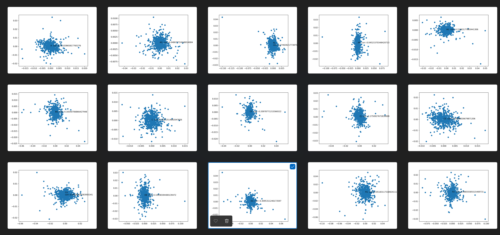
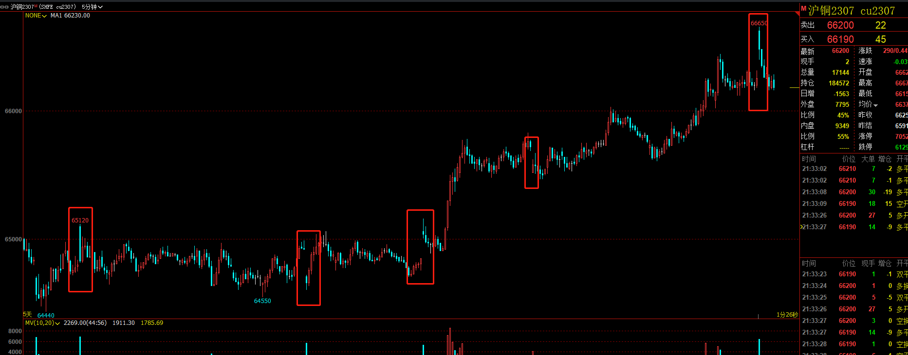
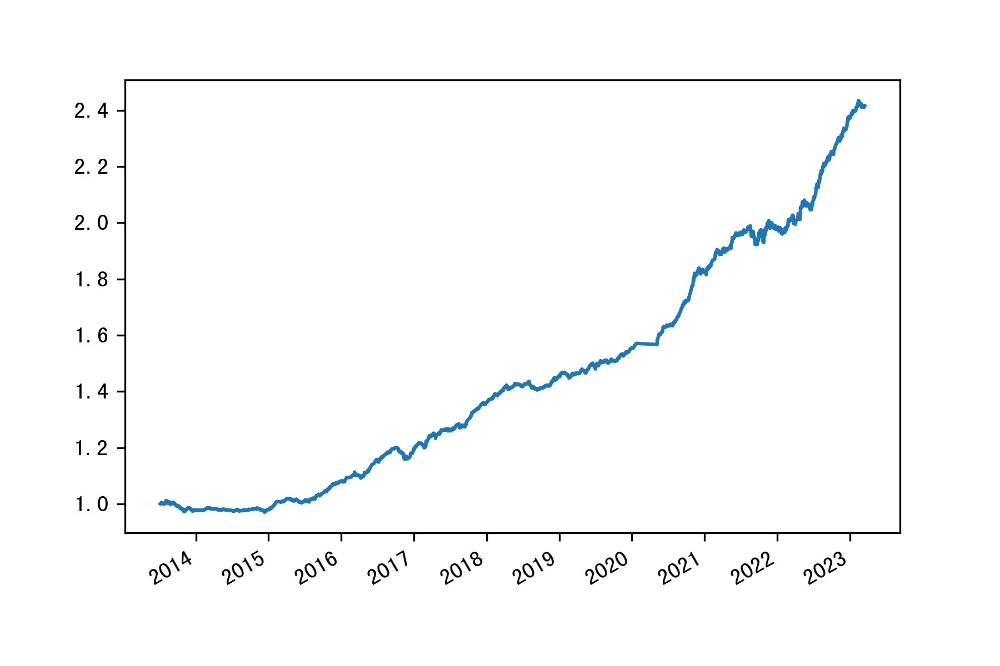
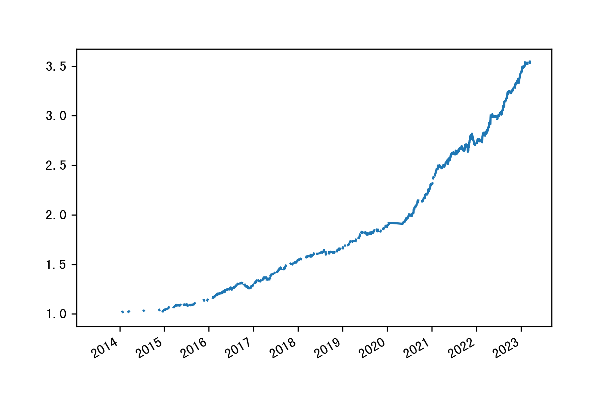

开盘5分钟价格反转的探索
动机说明
市场中经常存在过度反应和跟风的现象, 反映在价格表现上即过冲. 偏离市场均衡价格的资产会在供需关系的调整中向均衡价格调整. 从交易时间和交易量的关系来看, 这种偏离和回复的过程最容易发生在开盘阶段, 因为此时的交易量很大, 且市场刚刚开始交易, 需要时间从偏离的价格回到均衡. 于是我们探求以下可能性: 当开盘的价格与前一天收盘价格相差较大 (跳空) 时, 市场很有可能出现了过度反应的表现, 因此在开盘的短时间内价格可能会反向变动. 通过刻画这样的规律, 我们可能可以在其中获利.
实证检验
我们使用近十年的期货5分钟频率交易数据, 检验此猜想的正确性.
由于期货交易存在夜盘, 开盘的时间可能在晚上九点也可能在早上九点. 在统计过程中我们选择每个收盘数据 (下午三点) 的下一条作为开盘的数据, 计算开盘价格与收盘价格的差距 DIFF, 并使用开盘第一条数据的 open 和 close 价格计算对应的收益 PNL. 但是应当注意的是: 开盘时期价格变动快, 考虑到交易上的细节 (滑点和延时等), 这样计算的收益可能和真实操作所得并不相同.
我们对每个期货品种都计算 DIFF 和 PNL 序列的 Pearson 相关系数.
1
2
| from scipy.stats import pearsonr
corr, p_value = pearsonr(new_df['diff'], new_df['pnl'])
|
1
2
3
4
5
6
7
8
9
10
11
12
13
14
15
16
17
18
19
20
21
22
23
24
25
26
27
28
29
30
31
32
33
34
35
36
37
38
39
40
41
42
43
44
45
46
47
48
49
50
51
52
53
54
55
56
57
58
59
60
61
62
63
64
65
66
67
68
69
70
71
72
73
74
75
76
77
78
79
80
81
82
83
84
85
86
87
88
89
90
91
92
93
94
95
96
97
98
99
100
101
102
103
104
105
106
107
108
109
110
111
112
113
114
115
116
117
118
119
120
121
122
123
124
125
126
127
128
129
130
131
132
133
134
135
136
137
138
139
140
141
142
143
144
145
146
147
148
149
150
151
152
153
154
155
156
157
158
159
160
161
162
163
164
165
166
167
168
| A
Pearson相关系数： -0.20737190174724393
P值： 1.7852076381811683e-25
AG
Pearson相关系数： -0.13361857822411088
P值： 2.420977933053199e-11
AL
Pearson相关系数： -0.18829213623228383
P值： 5.465776219210477e-19
AP
Pearson相关系数： -0.05616517991102882
P值： 0.051857546218214576
AU
Pearson相关系数： -0.12807007748398577
P值： 1.5699949919249393e-10
BU
Pearson相关系数： -0.16231410732127666
P值： 1.0974306396604648e-12
C
Pearson相关系数： -0.2566809911845822
P值： 2.6361659122457257e-33
CF
Pearson相关系数： -0.16635734931627535
P值： 4.95132420686658e-15
CJ
Pearson相关系数： -0.1810257299828448
P值： 2.2067892364897213e-08
CS
Pearson相关系数： -0.18329779328760623
P值： 5.95077594365041e-15
CU
Pearson相关系数： -0.05150764582687138
P值： 0.010334419170353177
EB
Pearson相关系数： -0.1806782988547395
P值： 4.0464948293709895e-07
EG
Pearson相关系数： -0.34760052858929014
P值： 9.232583797283889e-31
FG
Pearson相关系数： -0.09368824539881997
P值： 2.9874569406286376e-06
FU
Pearson相关系数： -0.10103304029562014
P值： 0.0006562131042797476
HC
Pearson相关系数： -0.08724029364139538
P值： 0.00023330028982218045
I
Pearson相关系数： -0.0204587444212761
P值： 0.32746091961060486
J
Pearson相关系数： -0.0785045581296356
P值： 9.154044476502839e-05
JD
Pearson相关系数： -0.009830408101774189
P值： 0.6391100641984887
JM
Pearson相关系数： -0.09628207967967214
P值： 2.005425884252528e-06
L
Pearson相关系数： -0.06570289802656043
P值： 0.001065841094509181
LH
Pearson相关系数： -0.15895234812954687
P值： 0.0005731449456902907
LU
Pearson相关系数： -0.1320983395157422
P值： 0.0013125643950424436
M
Pearson相关系数： -0.20198087712916965
P值： 3.171932742252645e-24
MA
Pearson相关系数： -0.20014167683328324
P值： 6.737760670914706e-19
NI
Pearson相关系数： -0.09227175134515969
P值： 4.6758439553087953e-05
OI
Pearson相关系数： -0.08668217778237432
P值： 2.3358047306712454e-05
P
Pearson相关系数： -0.08040493342143368
P值： 6.149805873272647e-05
PB
Pearson相关系数： -0.1870928753097101
P值： 6.883664365518077e-14
PF
Pearson相关系数： -0.0640704275183838
P值： 0.14301868421961103
PG
Pearson相关系数： -0.07490730581405831
P值： 0.04450478051929686
PK
Pearson相关系数： -0.1608097249415772
P值： 0.0006434279813629637
PP
Pearson相关系数： -0.10867611424641291
P值： 3.1498580947313215e-07
RB
Pearson相关系数： -0.016298758643591045
P值： 0.4173721148585396
RM
Pearson相关系数： -0.050954310585970525
P值： 0.011185520529415112
RU
Pearson相关系数： -0.12566410968179936
P值： 3.4463655805171445e-10
SA
Pearson相关系数： -0.13974826805804705
P值： 9.389766181825825e-05
SC
Pearson相关系数： -0.27577594644160286
P值： 1.528828798173364e-22
SF
Pearson相关系数： -0.09131168173782554
P值： 0.0007615992869168916
SM
Pearson相关系数： -0.02005589086867765
P值： 0.44712395239013386
SN
Pearson相关系数： -0.07690265831968432
P值： 0.0012473790757263105
SP
Pearson相关系数： -0.1398470367341767
P值： 5.74704906998192e-06
SR
Pearson相关系数： -0.01706104241905038
P值： 0.3959237690301586
SS
Pearson相关系数： -0.03336657425427174
P值： 0.35328032713023405
TA
Pearson相关系数： -0.12496192599950555
P值： 4.323271920768125e-10
UR
Pearson相关系数： -0.02200548545044749
P值： 0.6152550341180621
V
Pearson相关系数： -0.05355994355191832
P值： 0.02736008966450975
Y
Pearson相关系数： -0.11820651913979813
P值： 3.5912923210402432e-09
ZC
Pearson相关系数： -0.09561346936436839
P值： 0.00015104336926349102
ZN
Pearson相关系数： -0.06365910793896877
P值： 0.001521576646902638
IC
Pearson相关系数： -0.06303361391053225
P值： 0.0056280212413991094
IH
Pearson相关系数： -0.08054974493332784
P值： 0.00039964441106484725
IF
Pearson相关系数： -0.021788725895656124
P值： 0.27827009006261044
T
Pearson相关系数： -0.019201537778653254
P值： 0.3972289119179992
TF
Pearson相关系数： -0.03022433177515388
P值： 0.17269567332216082
TS
Pearson相关系数： -0.08394964402970251
P值： 0.013463974520993325
|
可以发现每个品种的相关系数都为负数且显著, 说明跳空的幅度和开盘5分钟的价格变化方向负相关.
使用两组数据绘制散点图, 发现数据几乎在原点附近呈现近似联合正态分布, 而只有偏离原点较远的数据呈现出较为明显的负相关性. 因此, 我们应当建立恰当的筛选机制, 只在跳空幅度较大的一些时机进行交易.

同时, 5分钟K线也表现出类似的现象.

策略构建
我们选取两种方法简单地构建一个策略:
- 在每个开盘时期, 选择5个跳空幅度最大的品种进行交易, 即做空向上跳空的品种, 做多向下跳空的品种.
- 仅在时序上考虑单个品种, 如果跳空的幅度大于之前统计的标准差, 则进行相应操作.
具体实现上, 为了筛选出开盘的数据和计算所需的信息, 可以在原先的 DataFrame 中对每条数据附加前一条数据的 close 信息, 然后仅保留上午九点与晚上九点的数据.
1
2
3
4
5
6
| df = data[key].loc['2013-01-01 00:00:00':'2023-01-01 00:00:00'].copy()
df['last_close'] = df['close'].shift(1)
df['diff'] = (df['open'] - df['last_close'])/ df['last_close']
df['pnl'] = (df['close'] - df['open'])/df['open']
new_df = df[df.index.strftime('%H:%M:%S').str.contains('21:05') | df.index.strftime('%H:%M:%S').str.contains('9:05')].copy()
|
最终将每个品种得到的 new_df 中的 diff 和 pnl 单独构建新的表格, 即是我们信息的来源.
为了不使用未来的数据, 我们采用滚动的方式计算标准差, 期限为过去一年.
top-5
1
2
3
4
5
6
7
8
9
10
11
12
| def mark_max_5(row):
non_nan_values = row.dropna()
if len(non_nan_values) == 0:
return pd.Series(np.zeros(len(row)), index=row.index)
max_5 = row.nlargest(5)
return pd.Series(np.where(row.isin(max_5), 1, 0), index=row.index)
signal = merged_diff.apply(mark_max_5, axis=1)
|
greater than std
1
2
| std = merged_diff.rolling(241).std()
sig = std.apply(lambda x:np.where(x>1,x,np.nan)).apply(np.sign)
|
计算收益
产生的信号中只有 1 和 np.nan 两种, 我们在 1 的位置做空对应品种.
1
2
3
| pnl = (sig * merged_pnl).apply(np.nanmean,axis=1).fillna(0)
nav = (-pnl+1).cumprod()
nav.plot()
|
下图展示了第一种策略的收益曲线:

最大回撤为 6.73%, 夏普率 1.13.
下图展示了第二种策略的收益曲线:

最大回撤为 11.32%, 夏普率 1.90.
总结
总体表现上来看, 开盘5分钟的反转效应比较明显且稳定. 在期货价格 (复权后) 整体上涨的情况下我们依然通过做空获得了稳定且可观的结果. 然而这个简单的策略带来的效果似乎过于美好了, 但在真正是实现上, 策略的表现还会受到其他干扰. 开盘的交易中滑点是十分严重的问题, 由于买卖价差和交易延时的存在, 想要在精确的时刻上成交是要付出代价的(例如市价单, 损失ES). 如果不能在准确的时间以较为有利的价格成交, 经过计算在第二个5分钟所有的相关系数几乎都会反转符号, 意味着将要进一步造成损失. 另外, 高频交易的手续费也是不可忽视的因素.